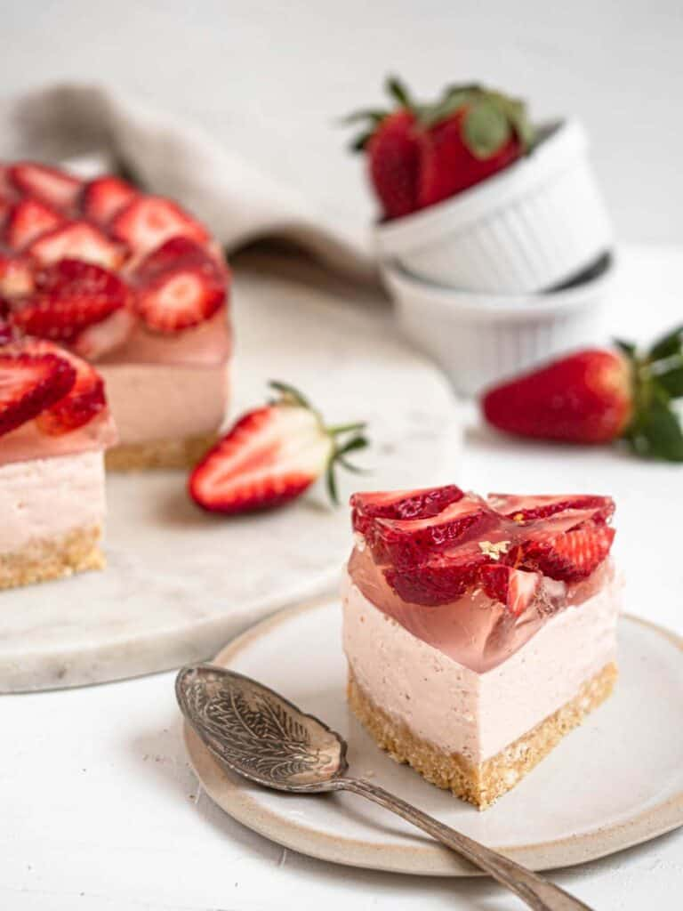

Strawberry Cheesecake

Description
No-bake strawberry cheesecake with a buttery shortbread crust, a creamy cheesecake filling, fresh strawberries and a refreshing lemon jelly.
Recipe from zhangcatherine.com
Ingredients
Cheesecake Base
- 150 g shortbread cookies
- 60 g unsalted butter
Cheesecake
- 250 g cream cheese, softened
- 95 g Greek yogurt
- 120 g fresh strawberries
- 100 g granulated sugar
- 2 1/2 tsp gelatine powder
- 30 ml water
Strawberry and Lemon Jelly
- 2 tsp gelatine powder
- 30 ml water #1
- 400 ml water #2
- 25 g granulated sugar
- juice of half a lemon
- 1 punnet strawberries
Steps
Cheesecake Base
- If using a 7 inch cake ring wrap the bottom with cling wrap, if using a 7 inch springform pan line the bottom with baking paper
- Line the sides of the tin with acetate / baking paper
- Crush the biscuits in a food processor or with a rolling pin
- Combine the biscuits and melted butter in a bowl until well combined
- Transfer the crushed biscuits to the lined tin and press the crumbs into the base
Cheesecake
- Whisk the water and gelatine powder together in a small bowl and set aside to bloom
- Combine the cream cheese, greek yoghurt, strawberries and sugar in the bowl of a blender, blitz until smooth
- Melt the bloomed gelatine at 5 second intervals in the microwave
- With the blender running slowly stream in the melted gelatine
- Pour the cheesecake batter over the biscuit base and cover with cling wrap
- Place the cheesecake in the fridge for 3-4 hours until set
Strawberry and Lemon Jelly
- Whisk the water (I) and gelatine powder together in a small bowl and set aside to bloom
- Combine the water (II), sugar and lemon juice in a microwave safe bowl
- Heat the lemon water for 1 minute and whisk until the sugar has dissolved
- Melt the bloomed gelatine at 5 second intervals in the microwave
- Whisk the melted gelatine into the lemon water and set aside
- Slice each strawberry into 4 slices and arrange over the top of the cheesecake
- Slowly and gently pour the lemon jelly through a fine meshed sieve, over the strawberries
- Gently relocate the cake into the fridge and allow it to set for 3 hours
- Once set, remove the cake from the tin
- Peel off the acetate/baking paper lining and enjoy!